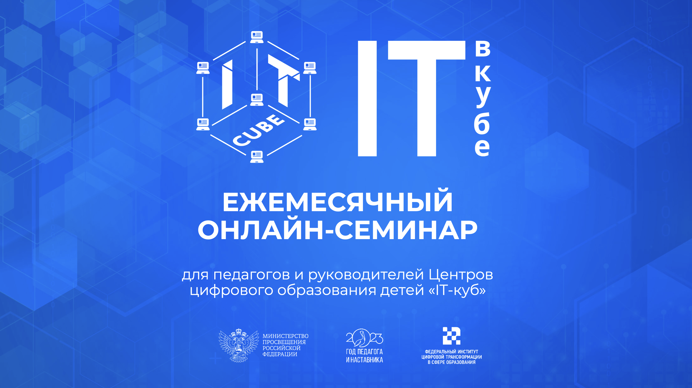
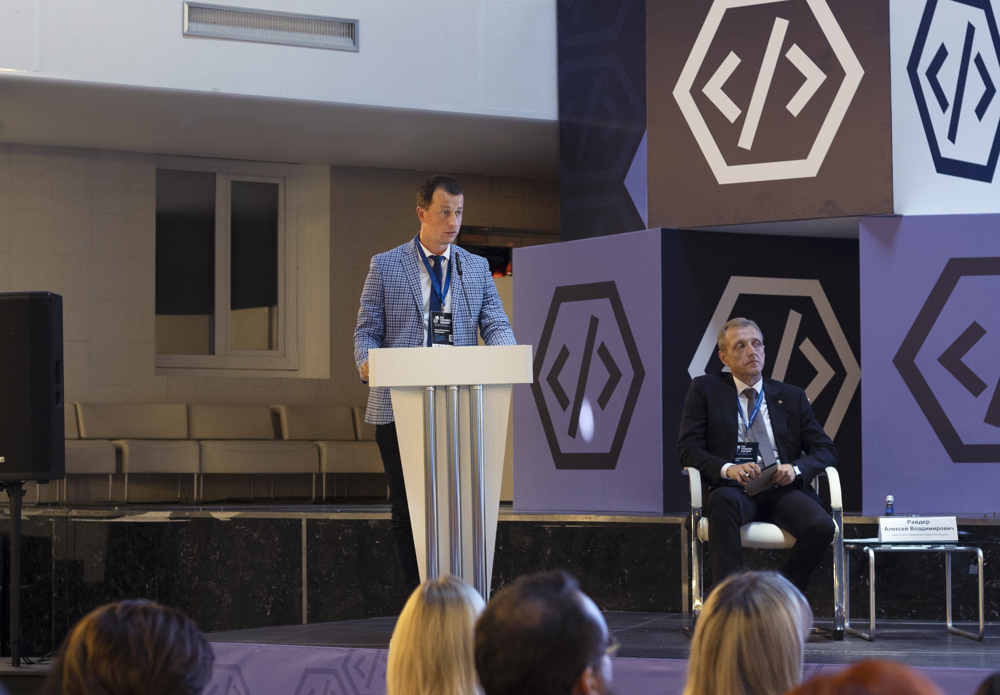
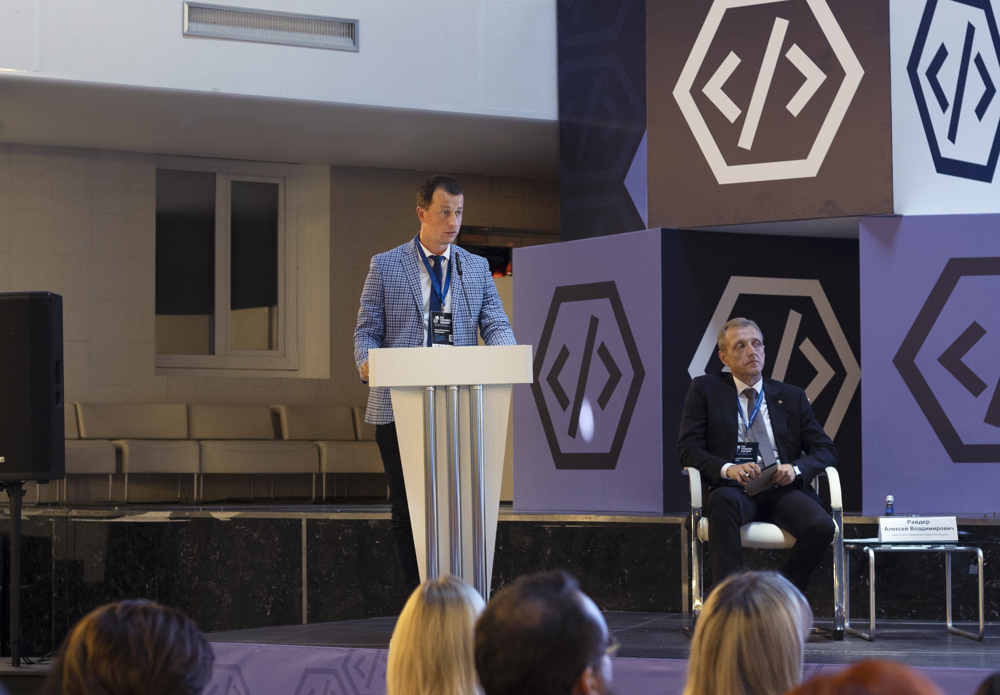
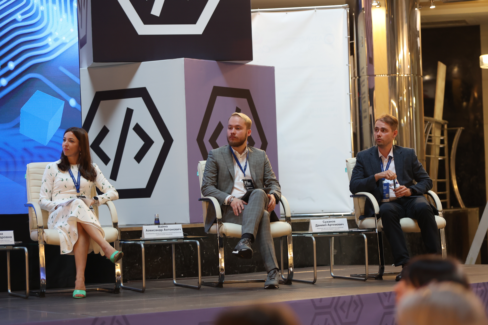
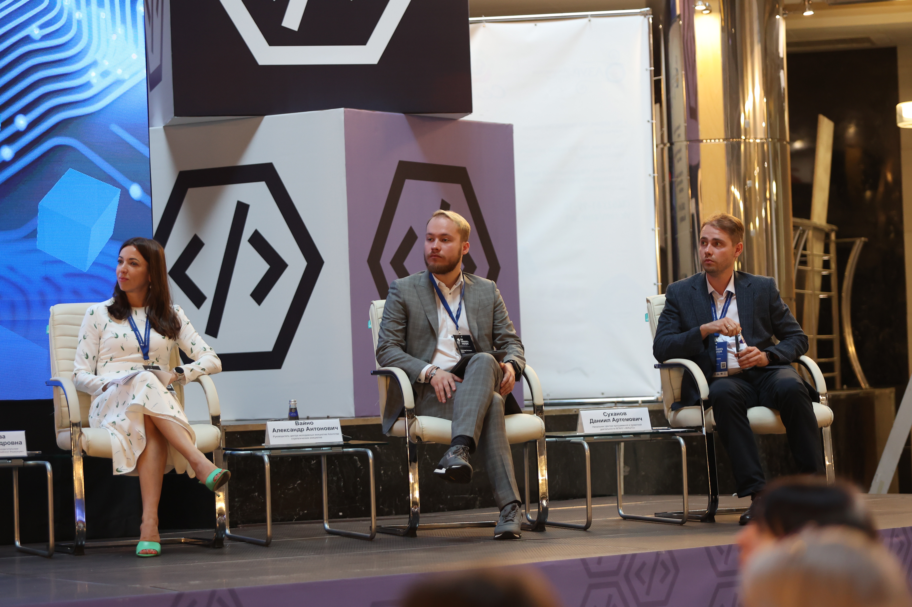

На онлайн–семинаре«IT–куб»анонсировали всероссийский хакатон по программированию для обучающихся Центров«IT–куб»
30 августа 2023 года состоялся очередной онлайн–семинар для педагогов и руководителей Центров цифрового образования детей «IT-куб». В мероприятии приняли участие представители Федерального института цифровой трансформации в сфере образования (ФГАНУ «ФИЦТО») и представители технологических партнёров — аккредитованных российских ИТ-компаний.
Открыл семинар начальник Центра программной и проектной деятельности ФГАНУ «ФИЦТО» Даниил Артёмович Суханов. Он подвёл итоги прошедшего в Тюмени 17–18 августа съезда руководителей Центров цифрового образования детей «IT-куб» «Как Управлять Будущим». В этом масштабном мероприятии приняли участие более 150 руководителей «IT-кубов» из 67 регионов России.
Во время семинара был анонсирован Всероссийский хакатон по программированию «Обучаюсь. Проектирую. Программирую. Будущее» для обучающихся Центров «IT-куб». Мероприятие пройдет при поддержке Министерства просвещения России, властей Свердловской области, АРПП «Отечественный софт», ПАО Сбербанк, ООО «КИБЕРПРОТЕКТ» и компании Varwin.
Команды участников могут заявиться по следующим направлениям:
Программирование
Информационная безопасность
Диджитал (VR/AR технологии)
Отборочный – региональный этап – хакатона пройдёт с 15 сентября по 10 октября. В рамках этого этапа регионы самостоятельно, на основе общих критериев из Положения о хакатоне, отберут участников, которые пройдут в следующий этап. От каждого из ЦЦОД «IT-куб» в каждом из трёх направлений хакатона может принять участие по одной команде численностью от 2 до 4 человек. В её состав могут войти обучающиеся в возрасте 14–18 лет. Таким образом, каждый Центр «IT-куб» может направить на мероприятие до трёх команд.
С 20 октября по 10 ноября команды примут участие в онлайн–встречах с компаниями–разработчиками кейсов для хакатона. Здесь участникам будет предоставлена дополнительная вводная информация по заданиям и организационным вопросам проведения Хакатона.
Финал состоится 24–26 ноября в Верхней Пышме (Свердловская область). Команды, занявшие первое место в каждом из направлений, получат возможность пройти командную стажировку в компании–технологическом партнёре направления.
В работе семинара приняли участие и представители технологических партнёров хакатона, которые представили кейсовые задания для команд участников. Региональный директор блока «Технологии» ПАО Сбербанк в г. Екатеринбурге (Свердловская область) Василий Александрович Тюменцев представил задание по направлению «Программирование». Оно предполагает разработку софта для автоматизации взаимодействие сотрудников с компанией, предоставляющей услуги корпоративного питания.
Со своей стороны руководитель образовательного направления компании Varwin Александр Евгеньевич Пикулев представил кейс по направлению «Диджитал (VR/AR технологии)». Задание предполагает организацию профессиональных проб с использованием технологий виртуальной реальности.
От имени технологического партнёра хакатона в направлении «Информационная безопасность» выступил Саркис Артушевич Шмавонян, менеджер по работе с образовательными организациями ООО «КИБЕРПРОТЕКТ». Кейсовое задание партнёра посвящено обеспечению безопасности гибридной информационной инфраструктуры нефтегазовой компании.
В рамках работы по организации функционирования Центров цифрового образования детей «IT-куб» на семинаре выступила руководитель проектов Центра программной и проектной деятельности ФГАНУ «ФИЦТО» Софья Андреевна Заика. Она анонсировала сбор информации о потребностях сотрудников Центров в курсах повышения квалификации.
Запись семинара с выступлениями всех спикеров доступна по ссылке в официальном сообществе ФГАНУ «ФИЦТО» во Вконтакте.
СправочноВ соответствиис методическими рекомендациями от 18 апреля 2023 года Федеральным оператором Центров цифрового образования детей «IT-куб» Министерством просвещения Российской Федерации определено ФГАНУ «Федеральный институт цифровой трансформации в сфере образования».


 


 
